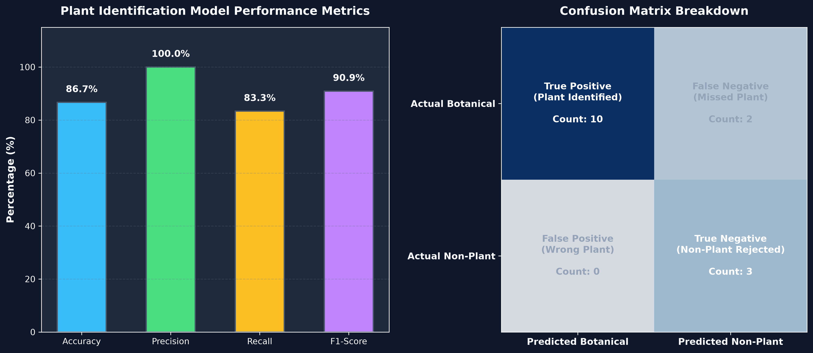
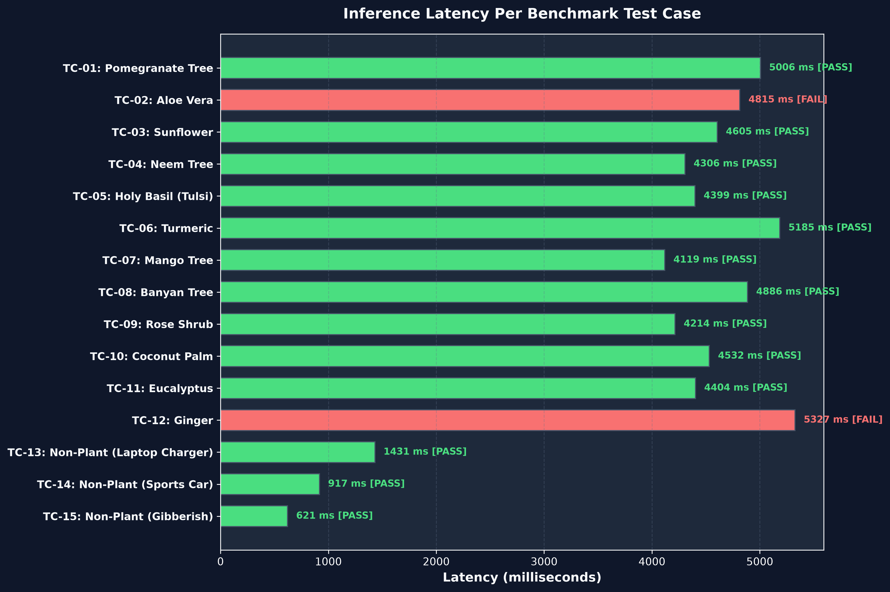
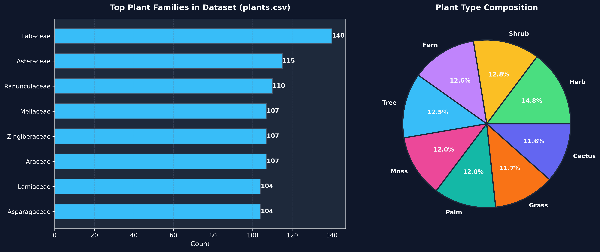

🌿 Botanical AI Identification - Analytics Dashboard
Interactive Plot & Model Performance Visualization
Model Status: Active (86.67% Accuracy)
Accuracy
86.67%
13 / 15 Tests Passed
Precision
100.0%
Zero False Positives
Recall
83.33%
10 / 12 Plants Detected
F1-Score
90.91%
Harmonic Mean Metric
📊 Identification Performance Overview
🎯 Confusion Matrix Breakdown
10
True Positives
(Correct Plant Match)
2
False Negatives
(Missed Identification)
0
False Positives
(Wrong Plant Match)
3
True Negatives
(Non-Plant Rejected)
⏱️ Inference Latency Per Test Case (ms)
🖼️ High-Resolution Rendered Plots
Benchmark Overview Plot

Latency Breakdown Plot

Plant Dataset Composition Plot
